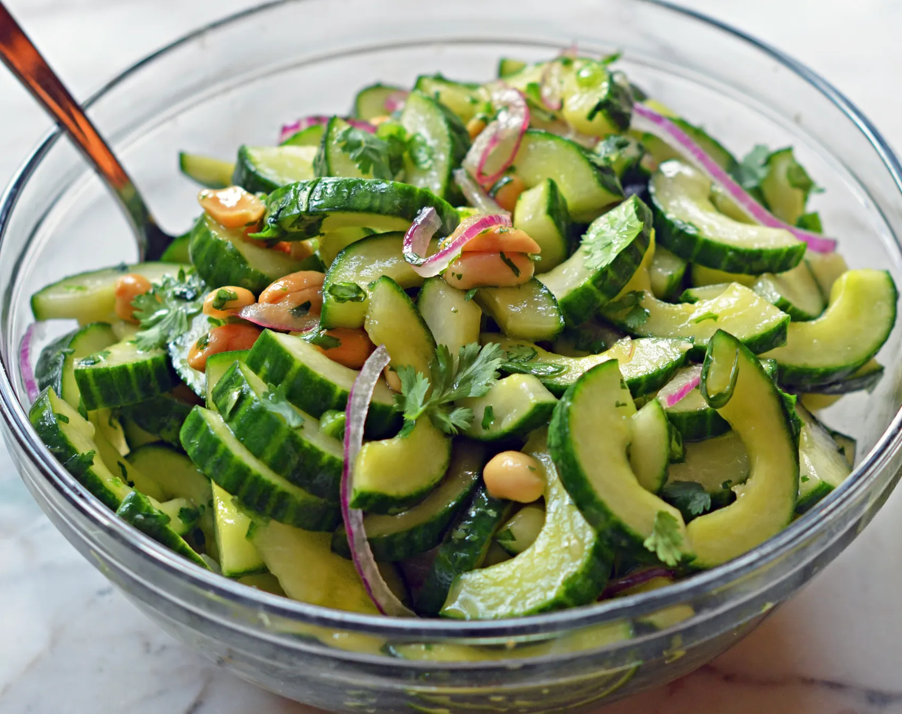

Salad

Description
Peanuts add welcome crunch to this tangy and sweet Thai cucumber salad.
Ingredient List
- ½ red onion, very thinly sliced
- 2 large English cucumbers, halved lengthwise, seeded and sliced crosswise ¼-inch thick
- ⅓ cup packed chopped fresh cilantro
- ½ cup salted peanuts
- 1 large jalapeño pepper, seeded and minced (or use 1-2 Thai chiles for more heat)
- ¼ teaspoon salt (optional)
Steps
- Place the onions in a small bowl of cold water. Let sit for ten minutes, then drain well and pat dry with a paper towel.
- In a large bowl, combine the drained red onions, cucumbers, cilantro, peanuts and jalapeño pepper. Set aside.
- Make the dressing: combine the lime juice, oil, fish sauce, sugar and garlic in a small bowl and whisk until the sugar dissolves. Pour the dressing over the salad and toss to combine. Taste and add salt if necessary. Serve the salad within 30 minutes.